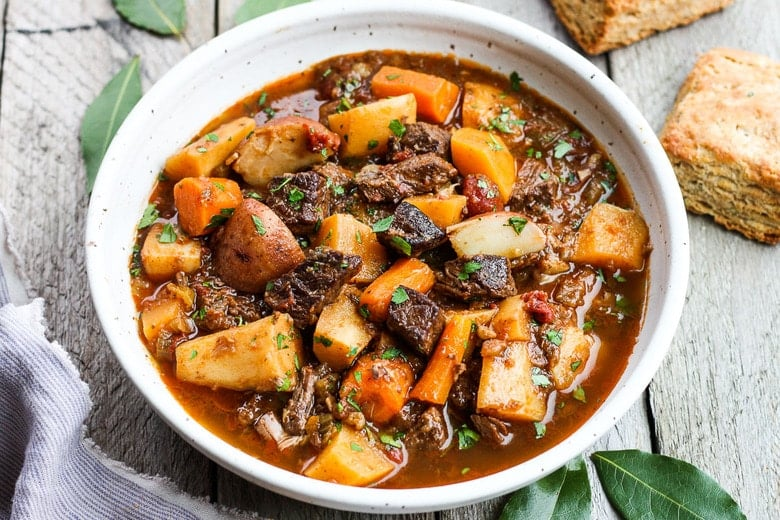

Beef Stew with Root Vegetables

Ingredients:
- 2 lbs beef stew meat, cut into cubes
- 2 tablespoons vegetable oil
- 1 large onion, chopped
- 3 cloves garlic, minced
- 4 cups beef broth
- 1 cup red wine (optional)
- 4 carrots, peeled and sliced
- 3 parsnips, peeled and sliced
- 3 potatoes, peeled and diced
- 2 bay leaves
- 1 teaspoon dried thyme
- Salt and pepper to taste
Instructions:
- In a large pot, heat vegetable oil over medium-high heat.
- Add beef stew meat and brown on all sides.
- Add chopped onion and minced garlic; sauté until softened.
- Pour in beef broth and red wine (if using), scraping the bottom of the pot to deglaze.
- Add carrots, parsnips, potatoes, bay leaves, dried thyme, salt, and pepper.
- Bring the stew to a boil, then reduce heat to low, cover, and simmer for 2-3 hours until meat is tender.
- Adjust seasoning if needed and serve hot.